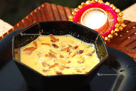

Rabdi Malai

Description
Rabdi Malai is a decadent Indian dessert, featuring thickened, creamy milk infused with saffron, cardamom, and enriched with chopped nuts. The addition of clotted cream, or malai, lends a luscious texture, creating a delightful sweet indulgence served chilled.
Ingredients
- milk
- suger
- cardamom powder
- saffron strands
- chopped almonds
- rose water
- malai
steps to make
- Pour the milk into a heavy-bottomed pan and bring it to a boil over medium heat.Once it boils, reduce the heat to low and let it simmer. Keep stirring occasionally to prevent the milk from sticking to the bottom of the pan.Add sugar, cardamom powder, saffron-soaked milk, and chopped nuts to the simmering milk. Continue to cook on low heat.
- Keep scraping the sides of the pan and adding the collected cream back into the milk. This process is what thickens the Rabdi.Simmer until the milk is reduced to about half its original volume and has a thick, creamy consistency. This may take around 45 minutes to an hour.Once the Rabdi is thickened, add rose water (if using) and mix well
- Turn off the heat and let it cool to room temperature.Once cooled, add malai (clotted cream) to the Rabdi and mix gently.Garnish with a few strands of saffron if desired.
- Chill in the refrigerator for a couple of hours before serving.